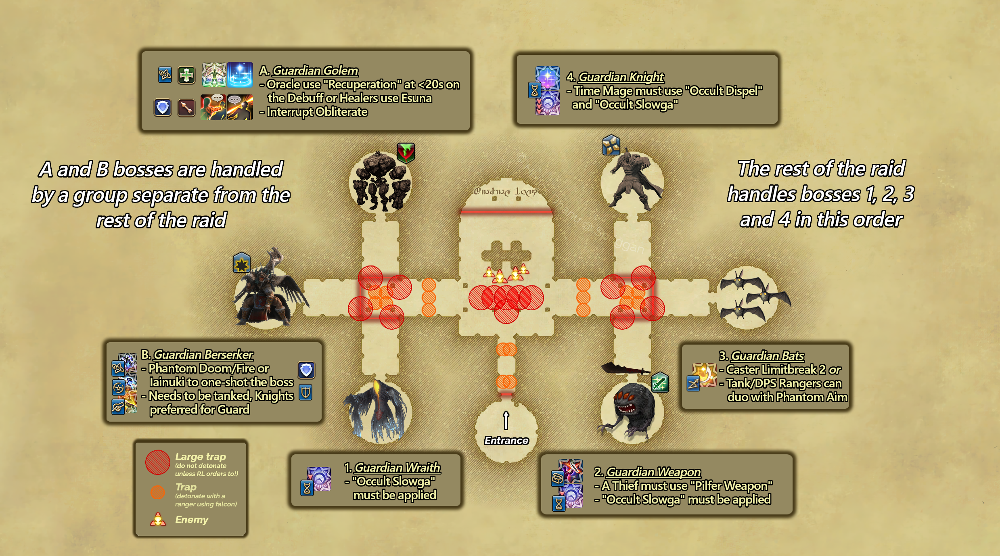
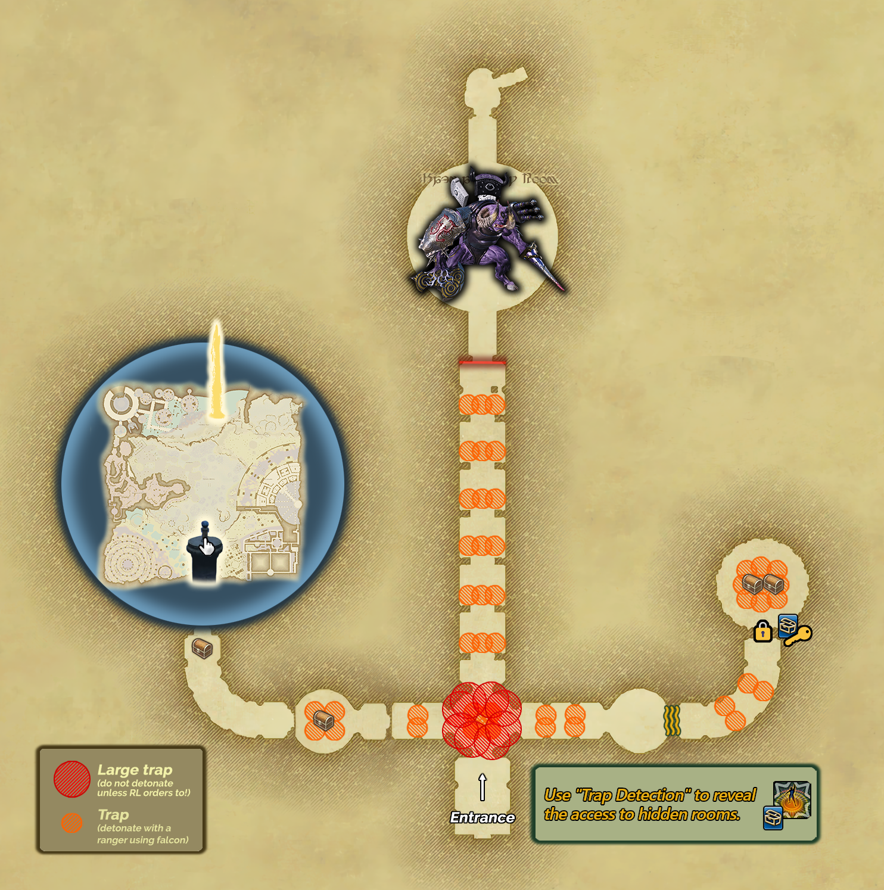

The Binding Lock
The warded section between Marble Dragon and Magitaur. Also referred to as “Lockwards.”
Overview
The Binding Lock is, in spirit, a continuation of the first hallways of the Forked Tower: Blood, featuring the return of small and large traps as well as enemies with mechanics. A lot of this section can be resolved by simply listening to callouts.
Once players teleport from the Marble Dragon arena they will be placed into a room with a red line marking the starting point for traps. At all times, the party should stay behind the Phantom Thieves who will be revealing traps. Traps will be detonated by the Phantom Rangers at the call of the host, and not any earlier.
After the initial hallway with traps, the party will reach a room with 6 large pillars containing 4 different enemies that each use AoEs. All enemies should be slowed with the Phantom Time Mage's Slowga and everyone should be ready to dodge orange AoE indicators.
- The Tower Petroglyph uses an untelegraphed cone attack and should be kept facing away from the party at all times.
- While enemies are being cleared, Phantom Thieves and Phantom Rangers should make their way to the West and East hallways to find and detonate traps safely.
Once the enemies are dealt with and the traps are disarmed, the alliance moves to the west side and works through the 6 side rooms starting from the Northwest, going counter-clockwise. All enemies in these rooms should be slowed by the Phantom Time Mage's Slowga where possible to allow more time to dodge their attacks.

Northwest: Guardian Golem
- Only one party should be sent to this room. Priority goes to any party that has a Phantom Oracle.
Mechanics:
- Toxic Minerals
- Earthen Heart: Targeted AoE.
- Boulder Clap: Frontal cone AoE.
- Obliterate: Room-wide AoE. Tanks and Physical Ranged DPS should interrupt this cast.
West: Guardian Berserker
- Send 1 tank and every Phantom Cannoneer, Phantom Samurai, and Phantom Oracle (except the one assigned to the Golem room). Everyone else should stay outside.
- The Berserker has 99% mitigation, making it effectively unkillable through normal attacks. It can only be killed through instant-kill abilities:
- Phantom Fire (Phantom Cannoneer)
- Iainuki (Phantom Samurai)
- Doom (Phantom Oracle)
- Spam these abilities until it dies. The tank must hold aggro throughout as the Berserker auto attacks between mechanics.
Mechanics:
- Raging Slice:
Southwest: Guardian Wraith
- Everyone not assigned to the Golem or Berserker rooms should head here.
- The Phantom Time Mage's Slowga is strongly encouraged.
- The Wraith is undead. Any Phantom Cannoneers present should use Holy Cannon.
Mechanics:
- Scream:
- Lingering Sentiment: Large targeted AoE on a random player.
Northeast: Guardian Knight
- The entire alliance should be present here.
- A Phantom Time Mage's Occult Dispel is required. Slowga is strongly encouraged.
- The Knight has a persistent Invincibility buff that must be Dispelled before it can take damage. The buff reapplies throughout the fight and must be Dispelled each time.
Mechanics:
- Buster Knuckles: Large point-blank AoE.
- Earthquake: Large donut AoE. Has no cast bar and always follows up Buster Knuckles immediately.
- Line of Fire: Line AoE aimed at the front of the Knight.
East: Guardian Bats
There are two main ways to handle the bat room.
Method 1: Caster Limit Break 2
- Send 1 tank and 1 caster per party. The run caller gives a countdown for all casters to use Limit Break simultaneously. Between 4 and 5 Level 2 Limit Breaks are needed to kill the bats.
- The tank should pull the bats slightly before the countdown finishes to hold aggro and keep them grouped within the Limit Break.
- Phantom Ranger can use Phantom Aim to guarantee hits.
- Phantom Samurai can use Zeninage, which always lands.
- Everyone else uses their attacks and hopes they land.
Method 2: Phantom Rangers Only
- Both Phantom Rangers use Phantom Aim and burst the bats down together. Use Phantom Unicorn to shield the party from the bats' raidwides.
- This only works if both Phantom Rangers are DPS or Tanks. Tank Rangers should use a stat potion.
Mechanics:
- Ancient Aero III: Raidwide.
- Aero II: Targeted line AoE with a telegraph.
- Tornado: Targeted circle AoE.
Southeast: Guardian Weapon
- The entire alliance should be present here. If the Northwest room is not yet finished that is fine, proceed ahead.
- A Phantom Thief must be present. Pulling the Weapon without one will result in a wipe, as Pilfer Weapon must be used immediately after the pull.
- The Phantom Time Mage's Slowga is strongly encouraged.
- A tank should pull using their invulnerability skill, as the Weapon deals exceptionally high damage at the start of the fight. As the pull happens, the Phantom Thief should approach and use Pilfer Weapon as soon as possible. This permanently disarms the Weapon and greatly reduces its threat.
Mechanics:
- Whirl of Rage: Small point-blank AoE. Casts relatively quickly.
- Smite of Rage: Small frontal line AoE. Telegraphs very late.
6 Pillars Puzzle
- Once all six rooms are cleared, everyone returns to the main room. Each of the 6 pillars has 3 segments with a red ring positioned above one of them.
- Each pillar corresponds to one of the cleared side rooms. When the enemy in a room dies, the red platform in that room begins to glow. Stepping on the platform lowers the corresponding pillar by one segment.
- The goal is to lower each pillar until its red ring reaches the floor. When all six are aligned, an orb activates in the centre. Interact with it to begin the next sequence.
The Lockwards
Waves of Lockward adds spawn in groups of 3. The raid gathers in front of the machine in the middle and works to repair the lock system.
- Group the adds up in the middle to AoE them down, with each group focusing on their assigned add:
- Groups A and 1: leftmost add
- Groups B and 2: middle add
- Groups C and 3: rightmost add
- The adds cast Cunning Keywork, which must be interrupted. If an interrupt fails, the entire system resets. Suggested interrupt order:
- Tank 1 (typically Phantom Knight)
- Tank 2
- Physical Ranged
- After a couple of waves, a Master Lockward spawns in the middle, identified by a strong blue glow.
- Kill the remaining adds and redo the Pillar Puzzle.
- Restart the encounter and continue killing and interrupting adds until authentication is completed. Once done, interact with the system. The doors open and all adds despawn.
Behind the door are two additional hallways containing optional loot. Traps are present here as well, so the party should stay behind the Phantom Thieves and Phantom Rangers as usual.
